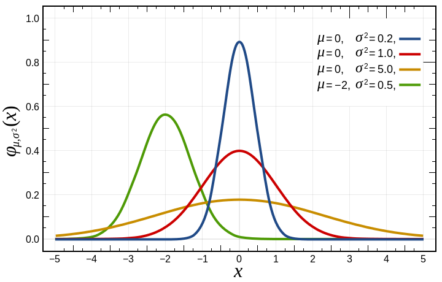
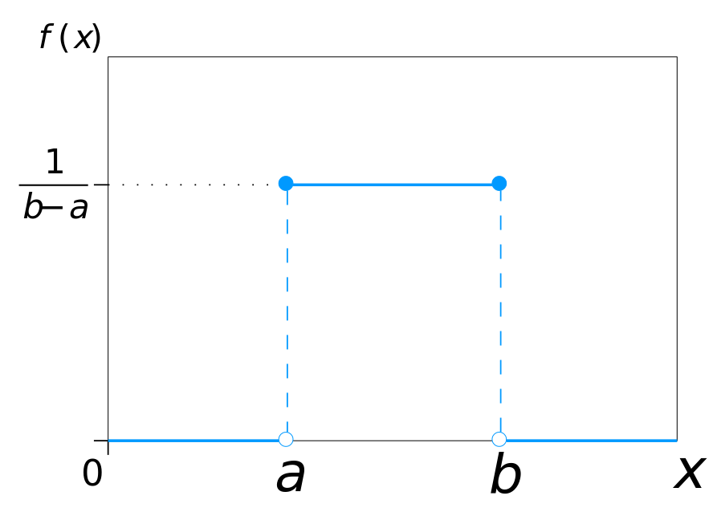
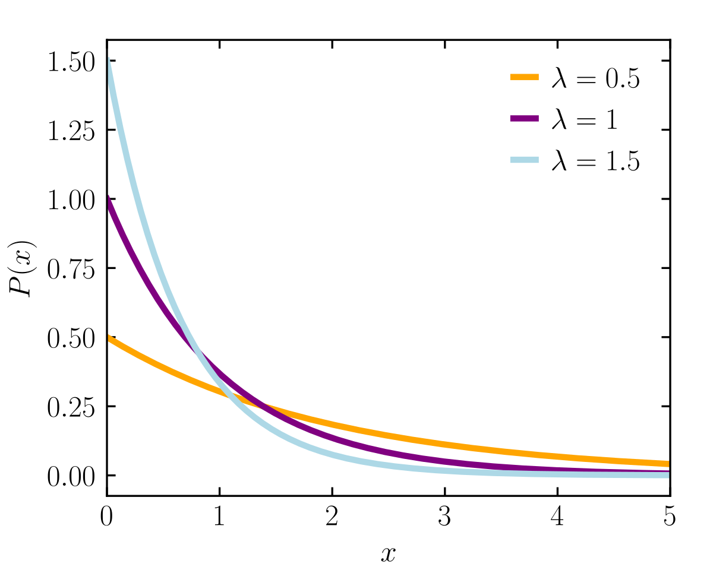
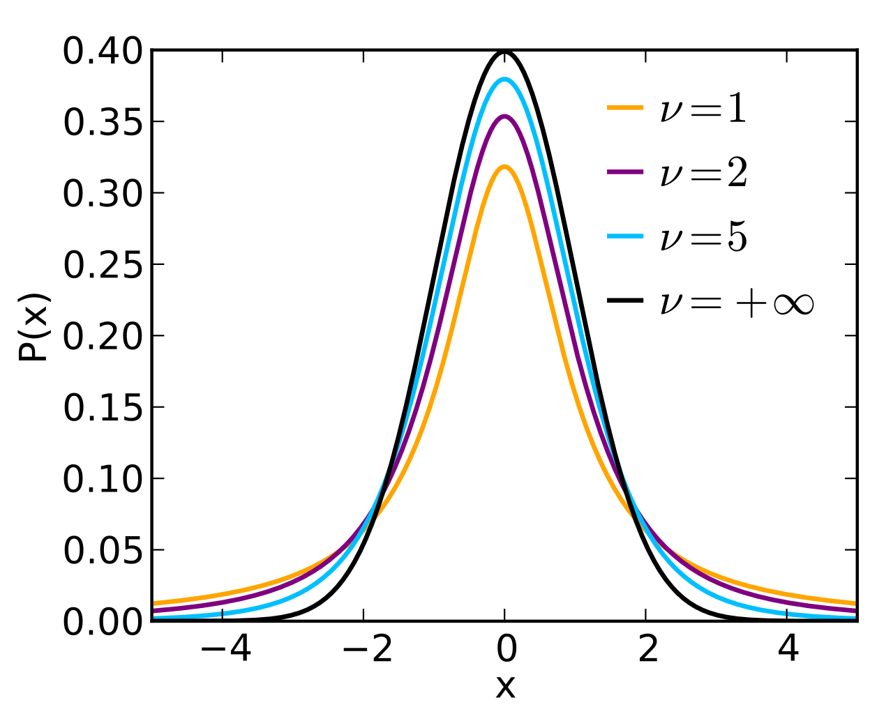
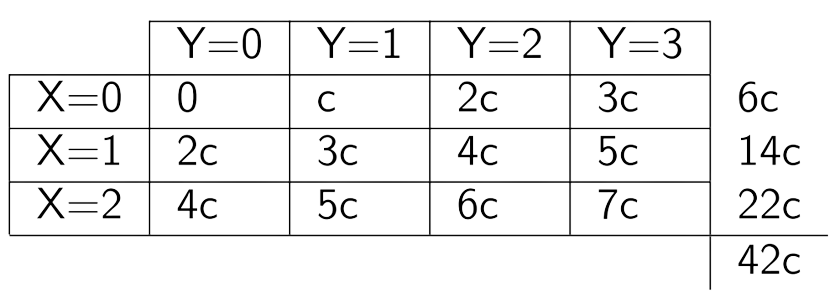

Distribuciones continuas
LFIS 325 - 2022/02
Eloy Alvarado Narváez
Universidad de Valparaíso
014/10/22
Distribuciones continuas
Distribución normal
Sea \(X\) una variable aleatoria que toma valores reales, esto es: \(-\infty<x<\infty\), diremos que \(X\) sigue una distribución normal (o Gaussiana) si su función de densidad está por:
\[f_{X}(x)=\dfrac{1}{\sqrt{2\pi}\sigma}\exp\left[ -\dfrac{1}{2}\left(\dfrac{x-\mu}{\sigma}\right) ^2\right]\]
En donde los parámetros de la distribución son \(\mu\) y \(\sigma\) satisfacen las condiciones:
\[\begin{align*} -\infty<\mu<\infty\\ \sigma^2>0 \end{align*}\]
Propiedades de la distribución normal
Si \(X\) sigue una distribución normal de parámetros \(\mu\) y \(\sigma\), entonces se cumple que:
- \(\mathbb{E}(X)=\mu\)
- \(\mathbb{V}(X)=E[X^2]-(E[X])^2=\sigma^2\)
- Si \(Y=aX+b\) entonces \(Y\) sigue una distribución normal de parámetros \(a\mu+b\) y \(a^2\sigma^2\), respectivamente. Se escribe: \(Y \sim N(a\mu+b,a^2\sigma^2)\)
Densidad de la distribución normal
Ejemplo distribución Normal
La duración de un láser semiconductor a potencia constante tiene una distribución normal con media 7.000 horas y desviación estándar de 600 horas.
¿Cuál es la probabilidad de que el láser falle antes de 5.000 horas?
¿Cuál es la duración en horas excedida por el 99% de los lasers?
Si se hace uso de tres láser en un producto y se supone que fallan de manera independiente. ¿Cuál es la probabilidad de que los tres sigan funcionando después de 6700 horas?
Resolución ejemplo
Por enunciado, sabemos que si definimos la variable aleatoria \(X\) como:
\[X= \text{Duración de un laser semiconductor a potencia constante.}\]
Entonces, podemos afirmar que \(X\sim N(7000,600^2)\). Luego,
\[\begin{align*} \mathbb{P}(X<5000)&=\mathbb{P}\left(\dfrac{X-7000}{600} < \dfrac{5000-7000}{600}\right)\\ &=\mathbb{P}(Z< -3.333); \hspace{10pt} Z\sim N(0,1)\\ &=0.0004 \end{align*}\]
y,
\[\begin{align*} &\mathbb{P}(X>x)=0.99 \Rightarrow 1-\mathbb{P}(X\leq x)=0.99\\ &\mathbb{P}\left(\dfrac{X-7000}{600} \leq \dfrac{x-7000}{600}\right)=\mathbb{P}(Z\leq z)=0.01 \end{align*}\]
Resolución ejemplo: continuación
\[\mathbb{P}(Z\leq z)=0.01 \Rightarrow z=-2.325\]
Ahora nos devolvemos a la variable original \(X\), así:
\[-2.325=\dfrac{x-7000}{600} \Rightarrow x=5605\]
Por lo que, la duración en horas excedida por el 99% de los lasers es de 5605 horas.
Resolución ejemplo: continuación
Ahora, para el item c) debemos reconocer como modelar la variable aleatoria del problema. Definimos la variable aleatoria:
\[Y= \text{ N° de lasers que siguen funcionando después de 6700 hrs}\]
Debimos reconocer que esta variable aleatoria tiene distribución \(Bin(3,p)\) en donde \(p\) es la probabilidad que uno de los lasers siga funcionando después de 6700 horas. Por lo que primero calculamos este valor:
\[\begin{align*} \mathbb{P}(X>6700)&=1-\mathbb{P}(X\leq 6700)=1-\mathbb{P}\left(\dfrac{X-7000}{600} < \dfrac{6700-7000}{600}\right)\\ &=1-\mathbb{P}(Z<-0.5)=1-.3085=0.6915 \end{align*}\]
Así, \(Y\sim Bin(3,0.6915)\). Finalmente, lo preguntado lo planteamos como:
\[\mathbb{P}(Y=3)=\mathbb{P}(Y\leq 3)-\mathbb{P}(Y\leq 2)= 1- 0.657 = 0.343\]
Distribución Uniforme
Sea \(X\) una variable aleatoria continua, diremos que \(X\) sigue una distribución uniforme sobre el intervalo \((a,b)\) si su función de densidad de probabilidad está dada por:
\[\begin{align*} f_{X}(x)=\begin{cases} 1/(b-a) \hspace{20pt} a\leq x \leq b\\ 0 \hspace{20pt} e.o.c \end{cases} \end{align*}\]
Los parámetros de la distribución cumplen las condiciones:
\[-\infty<a<\infty, \quad -\infty<b<\infty\]
\(\mathbb{E}(X)=\dfrac{(a+b)}{2}\)
\(\mathbb{V}(X)=\dfrac{(b-a)^2}{12}\)
Densidad de la distribución uniforme
Distribución exponencial
Sea \(X\) una variable aleatoria continua que toma valores positivos, diremos que \(X\) sigue una distribución exponencial con parámetro \(\alpha>0\) si su función de densidad está dada por:
\[\begin{align*} f_{X}(x)=\begin{cases} \alpha e^{-\alpha x} \hspace{20pt} x\geq 0 \\ 0 \hspace{20pt} e.o.c \end{cases} \end{align*}\]
Además se cumple que:
\(\mathbb{E}(X)=\dfrac{1}{\alpha}\)
\(\mathbb{V}(X)=\dfrac{1}{\alpha^2}\)
Densidad de la distribución exponencial
Función gamma
La función Gamma denotada por \(\Gamma\) está definida por:
\[\Gamma(p)=\int_{0}^{\infty} x^{p-1} e^{-x}dx \hspace{20pt} p>0\]
Esta función cumple las siguientes propiedades:
\(\Gamma(n)=(n-1)!\)
\(\Gamma(1/2)=\sqrt{\pi}\)
Distribución gamma
Sea \(X\) una variable aleatoria continua que toma valores positivos. Diremos que \(X\) sigue una distribución Gamma si su función de densidad está dada por:
\[\begin{align*} f_{X}(x)=\begin{cases} \dfrac{\alpha}{\Gamma(r)}(\alpha x)^{r-1}e^{-\alpha x} \hspace{20pt} x>0\\ 0 \hspace{20pt} e.o.c \end{cases} \end{align*}\]
En donde los parámetros \(r\) y \(\alpha\) son positivos.
Es claro ver que un caso particular de la distribución Gamma es la distribución exponencial (\(r=1\)). Si \(X\) se distribuye Gamma entonces se cumple:
\(\mathbb{E}(X)=r/\alpha\)
\(\mathbb{V}(X)=r/\alpha^2\)
Densidad de la distribución gamma

Distribución chi-cuadrado
Sea \(X\) una variable aleatoria continua que toma valores positivos, diremos que \(X\) sigue una distribución chi-cuadrado con \(k\) grados de libertad, si su función de densidad de probabilidad está dada por:
\[f(x;k)= \begin{cases}\displaystyle \frac{1}{2^{k/2}\Gamma(k/2)}\,x^{(k/2) - 1} e^{-x/2}&\text{para }x>0,\\ 0&\text{para }x\le0 \end{cases}\] donde \(\Gamma\) es la función gamma. Si \(X\) se distribuye Chi-Cuadrado entonces:
\(\mathbb{E}[X]=k\)
\(\mathbb{V}[X]=2k\)
Densidad de la distribución chi-cuadrado

Distribución t-student
Sea \(X\) una variable aleatoria continua que toma valores reales, diremos que \(X\) sigue una distribución t-student con \(\nu\) grados de libertad, si su función de densidad de probabilidad está dada por:
\[f(t) = \frac{\Gamma(\frac{\nu+1}{2})} {\sqrt{\nu\pi}\,\Gamma(\frac{\nu}{2})} \left(1+\frac{t^2}{\nu} \right)^{\!-\frac{\nu+1}{2}},\!\]
donde \(\Gamma\) es la función gamma. Si \(X\) se distribuye t-student entonces:
\(\mathbb{E}[X]=0\) para \(\nu>1\). Indefinida para otros valores.
\(\mathbb{V}[X]=\dfrac{\nu}{\nu -2}\) para \(\nu>2\). Indefinida para otros valores.
Densidad de la distribución t-student
Distribuciones de probabilidad bivariada
Sean \(X\) e \(Y\) dos variables aleatorias discretas. La probabilidad de que \(X=x\) y \(Y=y\) está determinada por la función de probabilidad bivariada.
\[p(x,y)=\mathbb{P}(X=x,Y=y)\]
en donde \(p(x,y)\geq 0\) para toda \(x,y,\) de \(X,Y\), y \(\sum_{x} \sum_{y} p(x,y)=1\). La suma se efectúa sobre todos los valores posibles de x e y.
Distribuciones de probabilidad bivariada: continuación
Análogamente que en distribuciones univariadas, la función de distribución acumulada bivariada es la probabilidad conjunto de que \(X\leq x\), y \(Y\leq y\), dada por:
\[F_{X,Y}(x,y)=\mathbb{P}(X \leq x, Y \leq y)=\sum_{x_i \leq x} \sum_{y_i \leq y} p(x_i,y_i)\]
La función de probabilidad conjunta de dos variables aleatorias da origen a las probabilidad puntuales conjuntas, y la función de distribución bivariada es una función escalonada creciente para cada probabilidad puntual distinta de cero, de manera tal que \(X=x\) e \(Y=y\).
Distribuciones de probabilidad bivariada: continuación
De igual manera, es posible definir lo anterior para variables aleatorias continuas. Sean \(X\) e \(Y\) dos variables aleatorias continuas. Si existe una función \(f(x,y)\) tal que la probabilidad conjunta:
\[\mathbb{P}(a<X<b,c<Y<d)=\int_{a}^{b}\int_{c}^{d}f(x,y)dydx\]
para cualquier valor de \(a,b,c\) y \(d\) en donde \(f(x,y)\geq 0\), \(-\infty < x,y < \infty\) y,
\[\int_{-\infty}^{\infty} \int_{-\infty}^{\infty} f(x,y)dydx =1,\]
entonces \(f(x,y)\) es la función de densidad de probabilidad bivariada de \(X\) e \(Y\).
Distribuciones de probabilidad bivariada: continuación
La función de distribución bivariada acumulada de \(X\) e \(Y\) es la probabilidad conjunta de que \(X\leq x\) y \(Y\leq y\), dada por:
\[\mathbb{P}(X \leq x , Y \leq y)=F(x,y)=\int_{-\infty}^{x} \int_{-\infty}^{y} f(u,v)dv,du\]
Así, la función de densidad bivariadad se encuentra diferenciando \(F(x,y)\) con respecto a \(x\) e \(y\), es decir:
\[f(x,y)=\dfrac{\partial^2 F(x,y)}{\partial x \partial y}\]
Distribuciones marginales de probabilidad
Sean \(X\) e \(Y\) dos variables aleatorias discretas con una función de probabilidad conjunta \(p(x,y)\). Las funciones marginales de probabilidad de \(X\) e \(Y\) están dadas por:
\[p_X(x)=\sum_{y} p(x,y)\]
y,
\[p_Y(y)=\sum_{x} p(x,y),\]
respectivamente.
Distribuciones marginales de probabilidad
Sean \(X\) e \(Y\) dos variables aleatorias continuas con una función de densidad de probabilidad conjunta \(f(x,y)\). Las funciones de densidad de probabilidad de \(X\) E \(Y\) están dadas por:
\[f_X(x)=\int_{-\infty}^{x}f(x,y)dy\]
y,
\[f_Y(y)=\int_{-\infty}^{y}f(x,y)dx\]
Distribuciones marginales de probabilidad: continuación
Para variables aleatorias continuas conjuntas, si se conoce la función de distribución acumulada \(F(x,y)\), las distribuciones acumuladas marginales de \(X\) e \(Y\) se obtienen de la siguiente forma:
\[\mathbb{P}(X\leq x)=F_X(x)=\int_{-\infty}^{x} \int_{-\infty}^{\infty} f(t,y)dydt\]
y,
\[F_X(x)=\int_{-\infty}^{x} f_X(t)dt=F(x,\infty)\]
De manera similar,
\[\mathbb{P}(Y\leq y)=F_Y(y)=\int_{-\infty}^{y} \int_{-\infty}^{\infty} f(x,t)dydt\]
Valores esperados y momentos para distribuciones bivariadas
Sean \(X\) e \(Y\) dos variables aleatorias que se distribuyen conjuntamente. El valor esperado de una función de \(X\) y de \(Y\), \(g(x,y)\) se define como:
\[\mathbb{E}(g(X,Y))=\sum_{x} \sum_y g(x,y)p(x,y)\]
si \(X\) e \(Y\) son V.A. discretas, o
\[\mathbb{E}(g(X,Y))=\int_{-\infty}^{\infty} \int_{-\infty}^{\infty} g(x,y) f(x,y) dydx\]
si \(X\) e \(Y\) son continuas, en donde \(p(x,y)\) y \(f(x,y)\) son las funciones de probabilidad y de densidad de probabilidad conjuntas, respectivamente.
Momentos para distribuciones bivariadas
El \(r-\)ésimo momento de \(X\) alrededor del cero es:
\[\mathbb{E}(X^r)=\int_{-\infty}^{\infty} \int_{-\infty}^{\infty} x^r f(x,y)dydx=\int_{-\infty}^{\infty}x^r f_X(x)dx\]
Por lo que el \(r\) y \(s-\)ésimo momento producto de \(X\) e \(Y\) alrededor del origen es:
\[\mathbb{E}(X^r Y^s)=\int_{-\infty}^{\infty} \int_{-\infty}^{\infty} x^r y^s f(x,y)dydx\]
y alrededor de las medias es:
\[\mathbb{E}((X-\mu_X)^r(Y-\mu_Y)^s)=\int_{-\infty}^{\infty}\int_{-\infty}^{\infty}(x-\mu_X)^r(y-\mu_Y)^sf(x,y)dydx\]
en donde \(r\) y \(s\) son enteros, no negativos.
Momentos para distribuciones bivariadas: continuación
Es de particular importancia el momento producto alrededor de las medias cuando \(r=s=1\). Este momento producto recibe el nombre de covarianza de \(X\) e \(Y\), y se encuentra definido por:
\[COV(X,Y)=\mathbb{E}((X-\mu_X)(Y-\mu_Y))\]
Al igual que la varianza, que es una medida de dispersión de una variable aleatoria, la covarianza es una medida de variabilidad conjunta de \(X\) y de \(Y\). De esta forma, la covarianza es una medida de asociación entre los valores de \(X\) y de \(Y\) y sus respectivas dispersiones. La expresión anterior puede ser reescrita de la forma:
\[COV(X,Y)=\mathbb{E}(XY)-\mathbb{E}(X)\mathbb{E}(Y)\]
Momentos para distribuciones bivariadas: continuación
Si la covarianza de \(X\) y de \(Y\) se divide por el producto de las desviaciones estándar de \(X\) y de \(Y\), el resultado es una cantidad sin dimensiones que recibe el nombre de coeficiente de correlación y que se denota por \(\rho(X,Y)\), esto es:
\[\rho(X,Y)=\dfrac{COV(X,Y)}{\sigma_x \sigma_y}\]
Se puede demostrar que el coeficiente de correlación \(\rho \in [-1,1]\)
Variables aleatorias independientes
Sean \(X\) e \(Y\) dos variables aleatorias con una distribución conjunta. Se dice que \(X\) e \(Y\) son estadísticamente independientes sí y sólo si,
\[p(x,y)=p_X(x)p_Y(y)\hspace{20pt} \text{ Si X e Y son discretas}\]
o bien,
\[f(x,y)=f_X(x)f_Y(y)\hspace{20pt} \text{ Si X e Y son continuas}\]
para toda \(x\) e \(y\), en donde \(p(x,y)\) y \(f(x,y)\) son las funciones bivariadas de probabilidad y de densidad de probabilidad, respectivamente.
Variables aleatorias independientes: continuación
Se desprende de la definición anterior que si \(X\) e \(Y\) son V.A. independientes, la probabilidad conjunta:
\[\mathbb{P}(a<X<b,c<Y<d)=\mathbb{P}(a<X<b)\mathbb{P}(c<Y<d)\]
y por lo anterior,
\[\mathbb{E}(XY)=\mathbb{E}(X)\mathbb{E}(Y)\]
Y si \(X\) e \(Y\) son V.A. independientes, entonces \(COV(X,Y)=\rho(X,Y)=0\),mas no el converso no es necesariamente cierto.
Distribuciones de probabilidad condicional
Sean \(X\) e \(Y\) dos variables aleatorias con una función de densidad conjunta de probabilidad \(f(x,y)\). La función de densidad de probabilidad condicional de la variable aleatoria \(X\), denotada por \(f(x|y)\), para un valor fijo \(y\) de \(Y\), está definida por:
\[f(x|y)=\dfrac{f(x,y)}{f_Y(y)}\]
en donde \(f_Y(y)\) es la función de densidad marginal de \(Y\) de manera tal que \(f_Y(y)>0\). Es claro ver que bajo independencia de estas variables aleatorias, se tiene:
\[f(x|y)=f_X(x)\]
Distribuciones de probabilidad condicional: continuación
Los valores esperados se definen de manera análoga a lo visto anteriormente, esto es:
\[\mathbb{E}(X|y)=\int_{-\infty}^{\infty}xf(x|y)dx\]
y,
\[\mathbb{E}(Y|x)=\int_{-\infty}^{\infty}yf(y|x)dy\]
Teorema del límite central
Sean \(X_1,X_2,\dots,X_n\), \(n\) variables aleatorias i.i.d. con una distribución de probabilidad no especificada y que tienen una media \(\mu\) y varianza \(\sigma^2\) finita. El promedio muestral
\[\overline{X}=(X_1+X_2+\cdots+X_n)/n\]
tiene una distribución con media \(\mu\) y varianza \(\sigma^2/n\) que tiende hacia una distribución normal conforme \(n\rightarrow\infty\).
En otras palabras, la variable aleatoria \((\overline{X}-\mu)/(\sigma/\sqrt{n})\) tiene como límite una distribución normal estándar.
Ejemplo
La función de probabilidad conjunta de dos variables aleatorias discretas \(X, Y\) está dada por \(f(x,y) = c(2x+y)\), donde \(x,y\) pueden tomar todos los valores enteros tales que \(0\leq x \leq 2,0\leq y \leq 3\), y \(f(x,y)=0\) de otra forma.
Hallar el valor de la constante c
Hallar \(\mathbb{P}(X=2,Y=1)\)
Hallar \(\mathbb{P}(X\geq 1, Y\leq 2)\)
Resolución ejemplo
Notamos que las V.A. toman sólo los valores entero, por lo que c lo obtenemos como:
\[\begin{align*} \sum_{x=0}^{2}\sum_{y=0}^{3} c(2x+y)=1 \end{align*}\]
Podemos resumir los valores que toma la función de cuantía como:
Por lo que \(c=\dfrac{1}{42}\)
Resolución ejemplo: continuación
Para el ítem 2. \(\mathbb{P}(X=2,Y=3)\) basta notar la celda correspondiente en la tabla construida reemplazando c apropiadamente, por lo que \(\mathbb{P}(X=2,Y=3)=7c=\dfrac{7}{42}\)
Para el ítem 3. Reconocemos que:
\[\begin{align*} \mathbb{P}(X\geq 1,Y\leq 2)&=\mathbb{P}(X=1,Y=0)+\mathbb{P}(X=2,Y=0)\\ &+\mathbb{P}(X=1,Y=1)+\mathbb{P}(X=2,Y=1)\\ &+\mathbb{P}(X=1,Y=2)+\mathbb{P}(X=2,Y=2)\\ &=2c+4c+3c+5c+4c+6c=24c=\dfrac{24}{42} \end{align*}\]
¿Qué veremos la próxima semana?
- Introducción a inferencia estadística
¿Qué deben preparar para la próxima semana?
- Estudiar pruebas de años anteriores
- Desarrollar guía de ejercicios
- Leer capítulo 6 y 7, Probability and Statistics for Engineering and the Sciences, 9th Edition.
LFIS 325 - Semana 7